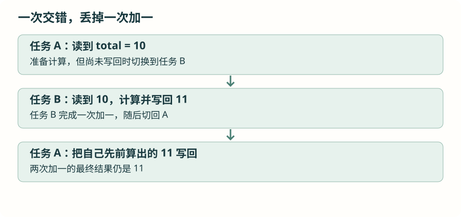

两个任务碰到同一个资源：先看怎样交错
任务有自己的栈，但总线、界面和文件级变量仍然可能共享。先沿着一次具体的交错找问题，再决定由谁使用资源，或怎样保护完整操作。
1 · 为什么一个函数单独调用没问题，交错后却错了？
想象任务 A 在通过 IIC 发送设备地址和寄存器位置时被切走，任务 B 又用同一个 IIC 外设发起另一笔操作。外设内部状态和 HAL 的控制句柄会被两次调用共同使用，B 可能得到忙状态；若上层操作由多次读写组成，也可能夹入不该插入的访问。
再看一个没有外设的例子：total++ 通常包含读出、加一、写回。两个任务都从 10 读起，各自加一后写回 11，总共执行了两次加一，结果却只增加一次。让变量加上 volatile，不会把这整段过程变成不可分割的一步。

2 · 先问：能否只让一个任务操作它？
最直接的办法是确定资源的使用者。例如当前项目的运动、光学传感器由 Sensor_Task 顺序读取，界面维护也集中在这项任务中。其他任务提交检测结果，而不是各自随意调用界面函数。
在这种安排下，两颗传感器共用 IIC，不代表一定需要为每次调用都增加互斥量。如果确实需要两个任务共享外设，才接着考虑保护整个操作。资源管理先从代码调用关系开始。
3 · 确实要共用时，引入互斥量
互斥量用于表示资源当前由哪个任务持有。任务取得它以后执行受保护操作，再释放；其他任务暂时取不到时，可以阻塞等待。
需要 semphr.h · 仅用于另设的共享总线实验
static SemaphoreHandle_t i2c_mutex;
/* main() 中，在创建使用者任务之前： */
i2c_mutex = xSemaphoreCreateMutex();
if (i2c_mutex == NULL) Error_Handler();任务内 · 沿用 LSM6DSOX 地址 0x6A、身份寄存器 0x0F；按实际地址脚核对
uint8_t identity;
HAL_StatusTypeDef status = HAL_ERROR;
if (xSemaphoreTake(i2c_mutex, pdMS_TO_TICKS(20)) == pdTRUE) {
status = HAL_I2C_Mem_Read(&hi2c1, 0x6A << 1, 0x0F,
I2C_MEMADD_SIZE_8BIT,
&identity, 1, 20);
xSemaphoreGive(i2c_mutex);
}
/* status == HAL_OK 时，才使用 identity。 */取得失败时，不执行总线访问。取得成功后，无论读数是否成功，都走到释放语句，避免资源永远被占住。所有共享这一资源的调用者必须遵守同一把互斥量，只有一方加锁不起作用。
若一项业务包含“切换寄存器组、读写、切回”，保护范围要覆盖这一整项业务。若采用异步传输，总线还在工作时不能仅因启动函数返回就释放资源，应设计到完成时再交还。互斥量有任务归属，不能从中断中释放。
4 · 优先级高，为什么仍可能被耽误？
低优先级任务已经取得资源；高优先级任务随后也需要它，只能等待。此时中等优先级任务一直运行，反而让低优先级持有者没有机会尽快做完并释放资源，高优先级任务就被间接拖住。这叫优先级反转。
FreeRTOS 互斥量提供基本的优先级继承：满足相应条件时，临时提高持有者的任务优先级，让它有机会完成并归还资源。它不能修复忘记释放、永久等待或循环占用资源。
例如 A 拿着资源甲等待乙，B 拿着乙等待甲，双方都无法继续，这叫死锁。避免它要从固定取资源顺序、减少嵌套、限制持有时间入手。普通二值信号量没有互斥量的任务归属与优先级继承语义，不能仅因它也能“取和给”就当成相同对象。
5 · 一个很短的状态交接，为什么用临界区？
有些操作只需保护几个变量的一次更新，不值得让另一个任务阻塞等待。可以进入临界区，在一小段时间内阻止会干扰这项操作的任务切换及部分中断：
任务环境的短状态交接示意 · frame_ready 已声明；中断侧需使用相应安全方式
taskENTER_CRITICAL();
uint8_t ready = frame_ready;
frame_ready = 0;
taskEXIT_CRITICAL();这段代码只解释状态交接。任务临界区使用当前 Cortex-M 端口的中断屏蔽机制，并不等于关闭所有中断；更紧迫、不能调用内核接口的中断可能仍然响应。因此保护哪些访问者，必须和中断优先级一起考虑。
临界区里不进行 IIC 传输、串口等待、算法计算，也不调用会阻塞的内核接口。保护几次变量更新，与占用总线几十毫秒是两种不同需求。长时间屏蔽相关中断还会妨碍系统节拍和 DMA 完成处理。
6 · 读项目时，先画谁读、谁写
列出每份共享数据的写入者、读取者，以及是否允许读到略旧状态。只由一个任务使用的数据保持局部；跨任务的小结果可按值交付；外设可以指定单一使用者；确实需要跨任务共享时再选择互斥。
读声音驱动时要格外关注中断正在写、任务正在读的缓冲。给一个标志加上 volatile 不能解决整个数组被覆盖的问题，下一篇会沿着数据从采集到归还的顺序解释。
资料与源码
本章按仓库当前 FreeRTOS V11.2.0 与 STM32U5 端口核对接口。图解描述执行关系，任务耗时和硬件行为需在实际工程观察。